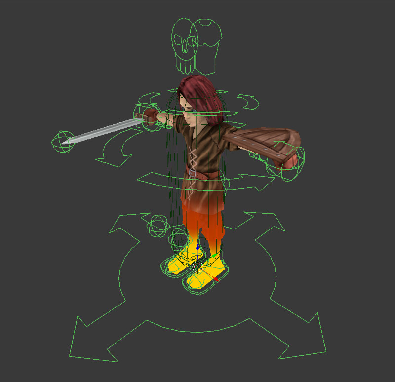
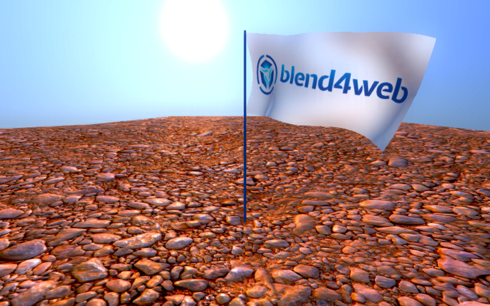

Animation¶
In general animation is changing the object’s parameters in time. The engine supports the following types of animation:
Object animation means the transformation of an object as a whole.
Skeletal animation, i.e. object deformation using bones. Animation of a standalone armature object is also supported (for parenting to bones).
Vertex animation. An object’s deformations can be recorded as frames and then reproduced in the engine.
Audio sources parametrization. Speaker’s
VolumeandPitchcan be animated.Animation of the
Valuenode output in node materials.Wind bending - a procedural animation. Described separately.
Particle emission. Described in the corresponding section.
Animation Control¶
There are two ways to control animation in the engine:
Automatically, activating the
Animationpanel and choosing theBehaviourparameter in the object’s properties. In this case an appropriate animation method will be chosen by the engine and the object’s animation playback will start just after a scene is loaded. In case of skeletal animation the action which is assigned to the object in theAction Editorwindow is played by default.In an application via API using the
animationmodule methods.
It’s useful to use the Animation interface for tweaking animation. This is covered in the corresponding section.
Object Animation¶
The parameters that can be animated are the center coordinates (Location), Rotation and Scale.
{kind=link}
Animation keyframes can be added for an object motion in Blender and then reproduced in the engine.
The following keyframe types are supported:
- Location
Rotation – the
Quaternion(WXYZ)orXYZ Eulermode is required.Scale – for correct results the scale factor should be the same along all 3 axes.
LocRot – a combination of Location and Rotation.
LocScale – a combination of Location and Scale.
LocRotScale – a combination of Location, Rotation and Scale.
RotScale – a combination of Rotation and Scale.
If a mesh object is animated it is required to activate the Force Dynamic Object option on the Rendering Propetries panel under the object properties tab.
Skinning and Skeletal Animation¶
{kind=link}
For skeletal animation both a mesh object and an armature object are needed. The four steps should be carried out:
Create the object’s “skeleton” in the armature object.
Assign vertex groups in the mesh object and link them to the bones. This can be performed by weight painting for example.
Animate the bones in the pose mode of the armature object. The same keyframe types can be used as for the object animation.
When inverse kinematics (IK) or other nontrivial structures are used, an additional step is required to bake the animations (
Actiondatablocks in Blender). Baking can be performed using theBake Skeletal Animationinterface located on theBlend4Webpanel.

Baking is performed with the armature object selected. Elements of the Bake Skeletal Animation interface:
A window with the list of actions being baked – bake only the actions which are listed, else - bake all the actions possible.
Name – the current action name from the list of actions being baked.
Optimize keyframes – optimize the animation keyframes after baking. In case of incorrect results it’s recommended to turn this option off.
Bake – perform baking. If the process is completed successfully, actions with names of NAME_B4W_BAKED type appear in the scene. These actions can be assigned to the armature object and played back in the engine. It’s worth noting that appropriate functioning of such actions in Blender is not garanteed.
Note
The engine supports up to 4 vertex groups per vertex. If the number of vertex groups exceeds 4 the vertex groups with the most influence are selected. When the scene is loaded the vertex weights are normalized i.e. their sum is reduced to 1.
To remove vertex groups which are not used by armature, use button Remove Clean Unused Vertex Groups.

Blend4Web also has initial support of the armature constraints. For now, the only supported constraint type is Copy Transform. It can be used to attach an armature to an object, producing effects such as ragdoll. Support of the other types of constraints will be added in further releases.
Vertex Animation¶
{kind=link}
Allows to record any geometry changes of a mesh object. Note that every vertex animation frame counts as a mesh. It’s not recommended to make a long animation for a high-poly mesh, as it can increase the size of the source and exported files significantly and can also slow down the work of the engine.
A special tool is used for baking vertex animation - Bake Vertex Animation - located on the Blend4Web tools panel.
{kind=link}
Audio Source Parametrization¶
In addition the following animation key types are supported for the speaker objects:
Volume
Pitch
Audio sources parametering in essence follows object animation.
Animation of Value and RGB Nodes¶
Playback of keyframes inserted on Value and RGB nodes is supported in node materials.

Note
Animation of numerical and color values on other nodes is not supported.
Can be also used to create tracks in the non-linear animation editor. Multiple animated Value or RGB nodes are supported per single material. Values of these nodes can be also modified via API, by using the set_nodemat_value and set_nodemat_rgb methods of the objects module.
See also